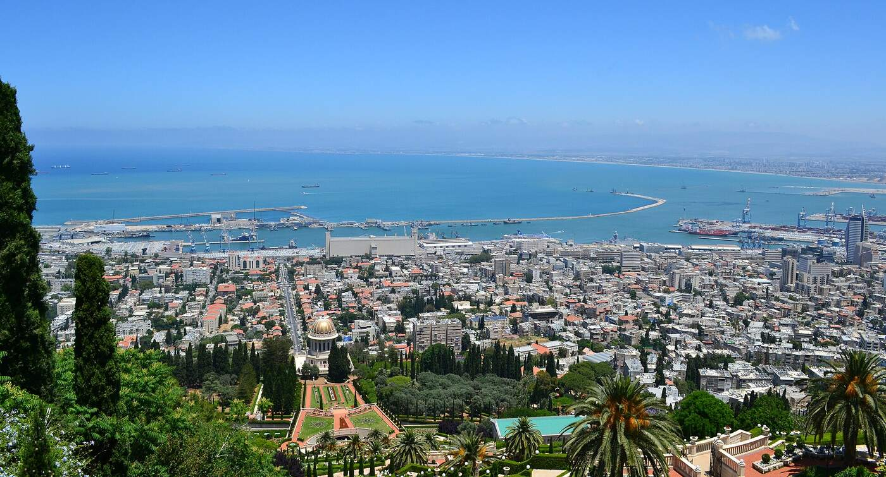
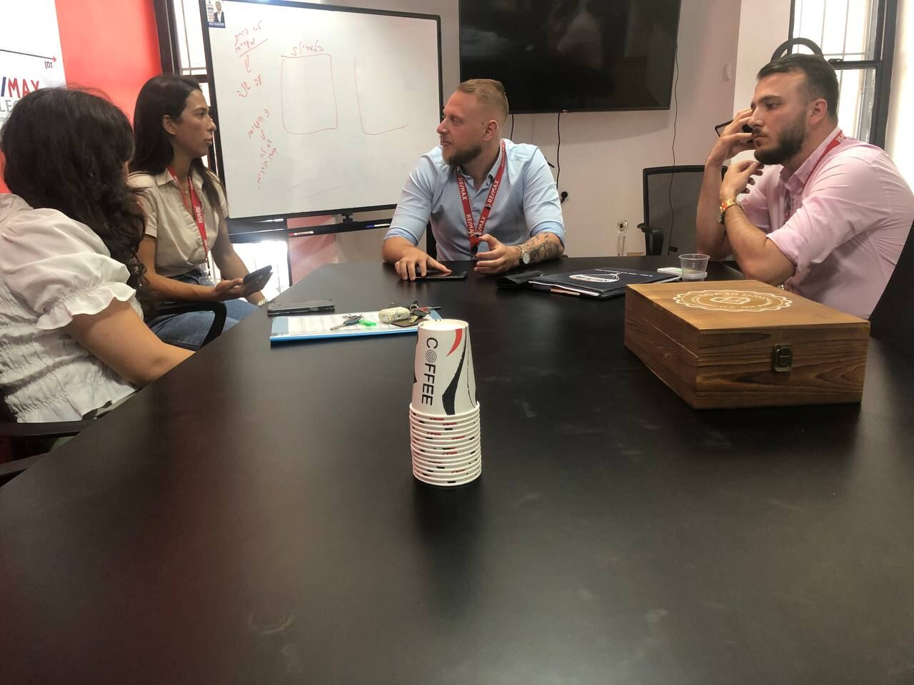
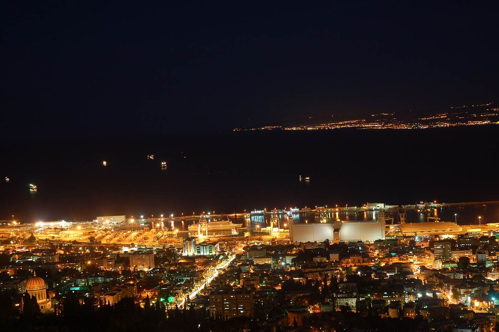
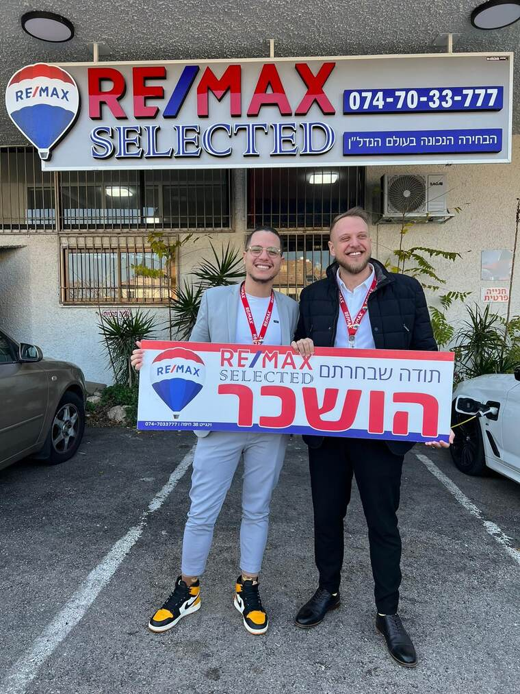
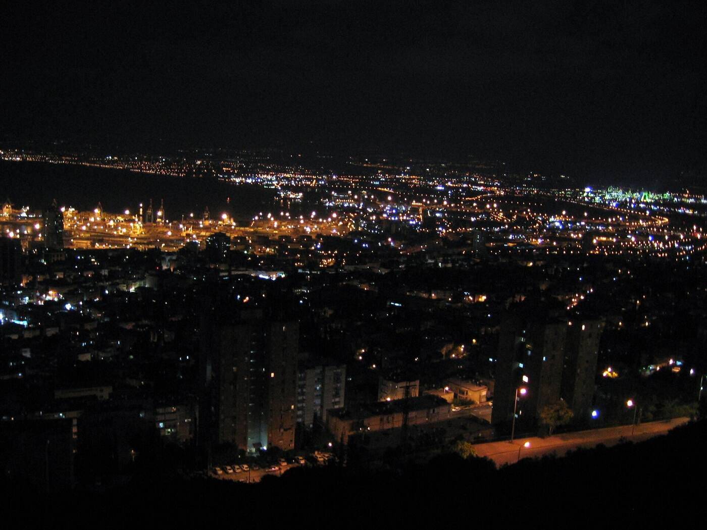
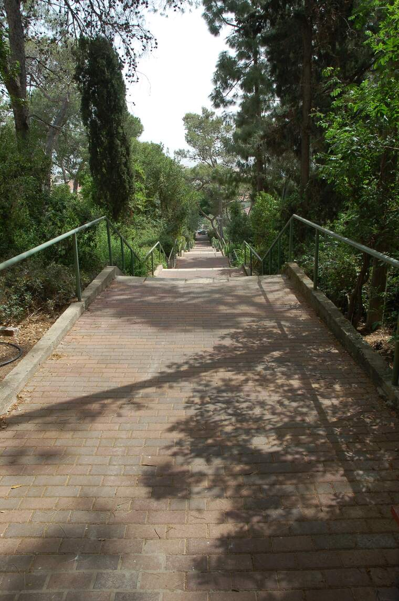

נפגשים.Meet.
שיחה ראשונה על הדירה, על השכונה ועל מה שחשוב לכם.A first talk about the home, the neighbourhood and what matters to you.
קונספט לדוגמה שנבנה עבור איתי בן הרוש מתווך – נדלניסט חיפה · זה אינו האתר הרשמי של העסקA sample concept built for Itay Ben Harush, real-estate agent in Haifa · This is not the business’s official website
מתווך נדל״ן בחיפה: מכירה, קנייה והשכרה של דירות. המשרד בשדרות מוריה 131.Real-estate agent in Haifa: selling, buying and renting homes. His office is at 131 Moriah Boulevard.
מפרץ חיפה מהכרמל · תמונה להמחשהHaifa Bay from the Carmel · illustrative photo
איתי בן הרוש מלווה מוכרים, קונים, משכירים ושוכרים של דירות בחיפה.Itay Ben Harush works with people selling, buying, letting and renting homes in Haifa.
על הבמה באירוע מקצועי, ותמונתו על המסך. מתוך תמונות העסק בגוגל.On stage at a professional event, his photo on the screen. From the business’s Google photos.
המשרד: שדרות מוריה 131, על הכרמלThe office: 131 Moriah Blvd, on the Carmel
שיחה ראשונה על הדירה, על השכונה ועל מה שחשוב לכם.A first talk about the home, the neighbourhood and what matters to you.

הדירה מוצגת למי שמחפש, ואיתי מתאם את הביקורים.The home is shown to people who are looking, and Itay arranges the viewings.

איתי מנהל את המשא ומתן מול הצד השני.Itay handles the negotiation with the other side.

חוזה, מפתחות, ושלט ״נמכר״ או ״הושכר״.A contract, the keys, and a “Sold” or “Rented” sign.
איתי מציג את הדירה ומתנהל מול הקונים.Itay shows the home and deals with the buyers.
חיפוש דירה בחיפה, מהביקור הראשון ועד החוזה.Looking for a home in Haifa, from the first viewing to the contract.
דירות להשכרה בחיפה, לבעלי הדירות ולשוכרים.Rentals in Haifa, for owners and for tenants.


״הוא אמין, מקצועי, מכיר את חיפה כמו כף היד שלו.״
“He’s reliable, professional, and knows Haifa like the back of his hand.”
איתי טיפל לי בדירה במסירות רבה והתנהל מול הקונים באופן הכי מקצועי שפגשתי. מכר לי את הדירה במחיר שרציתי אחרי הרבה מאמצים שלו עם הקונים! ממליץ בחום!!
Itay handled my apartment with great dedication and dealt with the buyers in the most professional way I’ve come across. He sold my apartment at the price I wanted, after a lot of effort with the buyers! Warmly recommended!!
איתי בן הרוש הוא בין המתווכים הכי מקצועיים ואמינים שיצא לי לעבוד איתם. ממליץ בחום לכל מוכרי וקוני הדירות בחיפה לפנות אליו בכל נושא שקשור בנדל״ן בחיפה.
Itay Ben Harush is among the most professional and reliable agents I’ve worked with. I warmly recommend that anyone selling or buying an apartment in Haifa turn to him on anything to do with real estate in Haifa.
בדרכ אנשים מפחדים לקחת מתווכים, אבל איתי הוא מהזן הנדיר של המתווכים. הוא אמין, מקצועי, מכיר את חיפה כמו כף היד שלו. גם למי שמעוניים לקנות וגם למי שמעוניין למכור – הבן אדם חי ונושם נדלן 24/7 ויחסוך לכם הרבה מאוד כאב ראש עם ידע וניסיון שלא יסולא בפז.
People are usually wary of taking an agent, but Itay is a rare kind of agent. He’s reliable, professional, and knows Haifa like the back of his hand. Whether you want to buy or to sell, the man lives and breathes real estate 24/7 and will save you a lot of headache with priceless knowledge and experience.
איתי הוא מהטובים אם לא הטוב והאמין ביותר בתחום! מקצועי וישר כמו שמצופה כשזה נוגע לרכישת דירה.
Itay is one of the best, if not the best and most reliable, in the field! Professional and straight, as you’d expect when it comes to buying an apartment.
איתי בן הרוש הוא סוכן הנדלן הטוב בחיפה. מקצועי, אמין ונותן שירות טוב ואדיב. מומלץ ביותר!
Itay Ben Harush is the best real-estate agent in Haifa. Professional, reliable, and gives good, courteous service. Highly recommended!
עם מי שמוכרים, קונים, משכירים או שוכרים דירה בחיפה.With people selling, buying, letting or renting a home in Haifa.
בשדרות מוריה 131 בחיפה. המפה למטה.At 131 Moriah Boulevard, Haifa. The map is below.
ראשון עד חמישי 9:00–21:00, שישי 9:00–16:00. בשבת המשרד סגור.Sunday to Thursday 9:00–21:00, Friday 9:00–16:00. Closed on Saturday.
כן, למספר 050-912-5421. אפשר גם להשתמש בהודעה המוכנה למעלה.Yes, to 050-912-5421. You can also use the ready-made message above.
